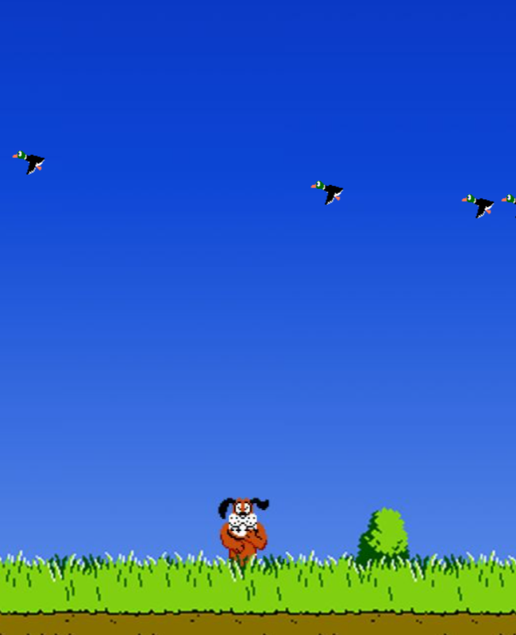
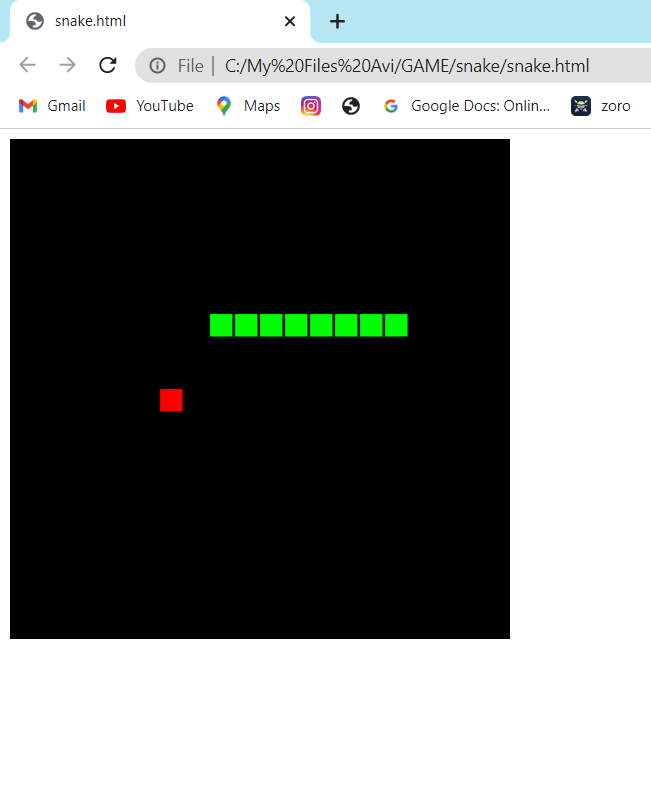

Created this Suduko solver from Geeks For Geeks Project using HTML and Js with Min-Max Algorithm It can solve any incomplete suduko.
Click Below For Source Code

Duck Shoot Game
Duck shoot game is designed with the help of HTML and CSS in which i used a audio which plays on click while shooting the duck. The score is also represented in the bottom.
Click below for Source Code

Old Snake Game
created using HTML with inbuilt JavaScript and CSS. Every time the snake hit the red block the lenght of snakes got bigger.